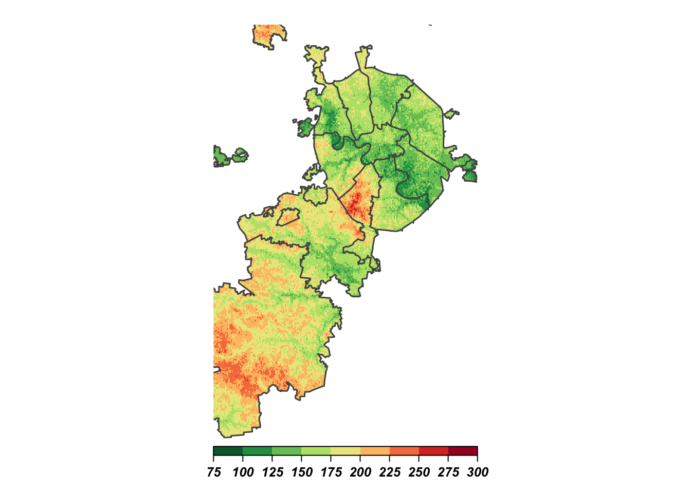

Часть 3. Растровые данные
Александр Шелудков
25 07 2018
You can never understand everything. But you should push yourself to understand the system.
Ryan Dahl
3.1. Что такое растровое изображение?
Что показывают эти снимки?
Мы видим лишь небольшую часть спектра электромагнитного излучения
 Source: https://ru.wikipedia.org/wiki/Электромагнитное_излучение#/media/File:EM_spectrum.svg
Source: https://ru.wikipedia.org/wiki/Электромагнитное_излучение#/media/File:EM_spectrum.svg
{kind=link}
На самом деле, совершенно не обязательно при построении растровых изображений ограничиваться только видимой частью излучения Мы можем комбинировать каналы. Этот прием чаще всего исопьзуется при анализе и дешифрировании космоснимков
Landsat band combinations interactive tool
Растровые изображения можно представить как числовые матрицы, которые хранят в ячейках значения переменных

Категориальные данные: пример - Glabal Land Cover
Как и с другими матрицами, с растровыми изображениями можно проводить математические операции: складывать, вычитать, умножать, возводить в степень и т.п. (raster algebra)
3.2. Классы растровых изображений в R
raster позволяет создавать объекты трех классов: RasterLayer, RasterStack и RasterBrick
RasterLayer состоит из 1 слоя (1 переменная)
library(raster)
r <- raster(ncol=10, nrow=10, xmx=-80, xmn=-150, ymn=20, ymx=60)
r## class : RasterLayer
## dimensions : 10, 10, 100 (nrow, ncol, ncell)
## resolution : 7, 4 (x, y)
## extent : -150, -80, 20, 60 (xmin, xmax, ymin, ymax)
## coord. ref. : +proj=longlat +datum=WGS84 +ellps=WGS84 +towgs84=0,0,0В данном примере мы создали RasterLayer, состоящий из 100 ячеек (10*10). Обратите внимание на систему координат объекта. В каких единицах указано разрешение растра (размеры одной ячейки)?
values(r) # Сейчас ячейки пустые## [1] NA NA NA NA NA NA NA NA NA NA NA NA NA NA NA NA NA NA NA NA NA NA NA
## [24] NA NA NA NA NA NA NA NA NA NA NA NA NA NA NA NA NA NA NA NA NA NA NA
## [47] NA NA NA NA NA NA NA NA NA NA NA NA NA NA NA NA NA NA NA NA NA NA NA
## [70] NA NA NA NA NA NA NA NA NA NA NA NA NA NA NA NA NA NA NA NA NA NA NA
## [93] NA NA NA NA NA NA NA NA# Наполним их значениями
values(r) <- 1:ncell(r)
plot(r)
RasterStack и RasterBrick это классы растровых объектов с множеством слоев. Разница в том, как они хранят данные: RasterStack - это список (list) из нескольких файлов или слоев (“bands”) одного файла, имеющих одинаковый экстент и разрешение. RasterBrick - это всегда один многослойный объект, поэтому расчеты с ним могут быть быстрее.
# RasterStack
s <- stack(r, r*r)
s## class : RasterStack
## dimensions : 10, 10, 100, 2 (nrow, ncol, ncell, nlayers)
## resolution : 7, 4 (x, y)
## extent : -150, -80, 20, 60 (xmin, xmax, ymin, ymax)
## coord. ref. : +proj=longlat +datum=WGS84 +ellps=WGS84 +towgs84=0,0,0
## names : layer.1, layer.2
## min values : 1, 1
## max values : 100, 10000# RasterBrick
b <- brick(s)
b## class : RasterBrick
## dimensions : 10, 10, 100, 2 (nrow, ncol, ncell, nlayers)
## resolution : 7, 4 (x, y)
## extent : -150, -80, 20, 60 (xmin, xmax, ymin, ymax)
## coord. ref. : +proj=longlat +datum=WGS84 +ellps=WGS84 +towgs84=0,0,0
## data source : in memory
## names : layer.1, layer.2
## min values : 1, 1
## max values : 100, 10000plot(b)
3.3. Чтение растровых данных
Для примера посмотрим на данные о высотах из проекта ASTER GDEM 2011
# Read raster data
elev <- raster("data/ASTGTM2_N55E037_dem.tif")
elev## class : RasterLayer
## dimensions : 3601, 3601, 12967201 (nrow, ncol, ncell)
## resolution : 0.0002777778, 0.0002777778 (x, y)
## extent : 36.99986, 38.00014, 54.99986, 56.00014 (xmin, xmax, ymin, ymax)
## coord. ref. : +proj=longlat +datum=WGS84 +no_defs +ellps=WGS84 +towgs84=0,0,0
## data source : /Users/aleksandrsheludkov/Desktop/ConfSchoolsSeminars/AnDan_Cartography_LSh2018/data/ASTGTM2_N55E037_dem.tif
## names : ASTGTM2_N55E037_dem
## values : -32768, 32767 (min, max)Что это за территория? Попробуем взглянуть на картинку
plot(elev) Source: USGS.
Source: USGS.
3.3.1. Задание 4
Откройте ту же территорию в leaflet (используйет данные из свойств RasterLayer)
3.4. Визуализация растровых изображений с помощью rasterVis
Построим простую карту высот
3.4.1 Подготовка данных
Для начала удалим все лишнее, обрезав растр в границах города
# Чтение данных о границах
moscow <- shapefile("data/mos_ao/ao.shp")
plot(moscow)
moscow@datalibrary(dplyr)
# Чтение данных о границах
elev %>%
crop(moscow) %>% # returns raster clipped by Spatial* object’s extent
mask(moscow) -> elev_cropped # returns raster, clipped by Spatial* object’s contour
elev_cropped## class : RasterLayer
## dimensions : 3089, 3483, 10758987 (nrow, ncol, ncell)
## resolution : 0.0002777778, 0.0002777778 (x, y)
## extent : 36.99986, 37.96736, 55.14208, 56.00014 (xmin, xmax, ymin, ymax)
## coord. ref. : +proj=longlat +datum=WGS84 +no_defs +ellps=WGS84 +towgs84=0,0,0
## data source : in memory
## names : ASTGTM2_N55E037_dem
## values : 9, 293 (min, max)plot(elev_cropped)
3.4.2 Интервалы
Какой перевад высот мы получили? Взглянем на гистограмму
library(ggplot2)
ggplot()+
geom_histogram(aes(values(elev_cropped)))
summary(values(elev_cropped))## Min. 1st Qu. Median Mean 3rd Qu. Max. NA's
## 9 156 176 176 196 293 6462532Есть небольшое число выбросов, проигнорируем их
3.4.3 Levelplot
library(rasterVis)
levelplot(elev_cropped,
at=seq(75, 300, 25),
col.regions=colorRampPalette(rev(brewer.pal(10, 'RdYlGn'))),
margin=FALSE, colorkey=list(space='bottom',
labels=list(at=seq(75, 300, 25), font=4),
axis.line=list(col='black'),
width=0.75),
par.settings=list(strip.border=list(col='transparent'),
strip.background=list(col='transparent'),
axis.line=list(col='transparent')),
xlab = NULL,
ylab = NULL,
scales=list(draw=FALSE),
alpha.regions = 1)
3.5. А что если?
3.5.1 А что если я хочу вытащить статистику из растра по отдельным полигонам?
…и не обрезать растр каждый раз
extract() из пакета raster
extract(elev_cropped, # RasterLayer
moscow, # SpatialPolygon
fun = mean, # функция
# sp = T, # сохрани результат расчета в таблицу атрибутов Spatial* объекта
df = T) # верни табличку а что если растр такой тяжелый, а у меня не видеокарта для майнинга?
Тогда используй пакет velox. Он использует другие алгоритмы вычислений. Минус в том, что velox работает только с объектами собственных классов
library(velox)
# создаем объект velox из нашего растра
my_velox <- velox(elev_cropped)
# доступные функции хранятся в свойствах самого объекта.
# Вызываем их через $
my_velox$extract(sp = moscow,
fun = mean,
df = T)Посмотреть/почитать: ссылка на мой гит
3.5.2 А что если я хочу добавить в levelplot векторные объекты?
levelplot(elev_cropped,
at=seq(75, 300, 25),
col.regions=colorRampPalette(rev(brewer.pal(10, 'RdYlGn'))),
margin=FALSE, colorkey=list(space='bottom',
labels=list(at=seq(75, 300, 25), font=4),
axis.line=list(col='black'),
width=0.75),
par.settings=list(strip.border=list(col='transparent'),
strip.background=list(col='transparent'),
axis.line=list(col='transparent')),
xlab = NULL,
ylab = NULL,
scales=list(draw=FALSE),
alpha.regions = 1)+
layer(sp.lines(moscow, col = "grey32", lwd = 1.5))